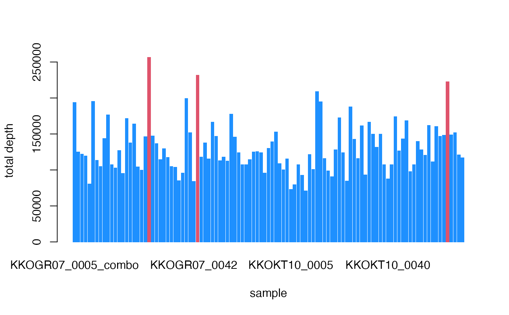

This function outputs the normalized depth values separately for each allele, calculated using normalization factor with trimmed mean of M-values of sample libraries, median ratios normalization or quantile normalization, See details.
Usage
cpm.normal(
het.table,
method = c("MedR", "QN", "pca", "TMM", "TMMex"),
logratioTrim = 0.3,
sumTrim = 0.05,
Weighting = TRUE,
Acutoff = -1e+10,
verbose = TRUE,
plot = TRUE
)Arguments
- het.table
allele depth table generated from the function
hetTgen- method
character. method to be used (see details). Default
TMM- logratioTrim
numeric. percentage value (0 - 1) of variation to be trimmed in log transformation
- sumTrim
numeric. amount of trim to use on the combined absolute levels (“A” values) for method
TMM- Weighting
logical, whether to compute (asymptotic binomial precision) weights
- Acutoff
numeric, cutoff on “A” values to use before trimming (only for TMM(ex))
- verbose
logical. show progress
- plot
logical. Plot the boxplot of sample library sizes showing outliers
Value
Returns a list with (AD), a data frame of normalized depth values
similar to the output of hetTgen function and
(outliers) a list of outlier sample names
Details
This function converts an observed depth value table to an effective depth value table using several normalization methods;
TMM normalization (See the original publication for more information). It is different from the function
normzonly in calculation of the counts per million is for separate alleles instead of the total depth. TheTMMexmethod is an extension of theTMMmethod for large data sets containing SNPs exceeding 10000The method
MedRis median ratio normalization;QN - quantile normalization (see Maza, Elie, et al. 2013 for a comparison of methods).
PCA - a modified Kaiser's Rule applied to depth values: Sample variation of eigen values smaller than 0.7 are removed (i.e., the first eigen value < 0.7) to eliminate the effect of the library size of samples
References
Robinson MD, Oshlack A (2010). A scaling normalization method for differential expression analysis of RNA-seq data. Genome Biology 11, R25
Robinson MD, McCarthy DJ and Smyth GK (2010). edgeR: a Bioconductor package for differential expression analysis of digital gene expression data. Bioinformatics 26
Maza, Elie, et al. "Comparison of normalization methods for differential gene expression analysis in RNA-Seq experiments: a matter of relative size of studied transcriptomes." Communicative & integrative biology 6.6 (2013): e25849
Examples
if (FALSE) data(ADtable)
ADnormalized<-cpm.normal(ADtable)
#> calculating normalization factor
#>
|
| | 0%
|
| | 1%
|
|= | 2%
|
|= | 3%
|
|== | 4%
|
|== | 5%
|
|=== | 6%
|
|=== | 7%
|
|==== | 8%
|
|==== | 9%
|
|===== | 10%
|
|====== | 11%
|
|====== | 12%
|
|======= | 13%
|
|======= | 14%
|
|======== | 15%
|
|======== | 16%
|
|========= | 17%
|
|========= | 18%
|
|========== | 19%
|
|========== | 20%
|
|========== | 21%
|
|=========== | 22%
|
|=========== | 23%
|
|============ | 24%
|
|============ | 25%
|
|============= | 26%
|
|============= | 27%
|
|============== | 28%
|
|============== | 29%
|
|=============== | 30%
|
|================ | 31%
|
|================ | 32%
|
|================= | 33%
|
|================= | 34%
|
|================== | 35%
|
|================== | 36%
|
|=================== | 37%
|
|=================== | 38%
|
|==================== | 39%
|
|==================== | 40%
|
|==================== | 41%
|
|===================== | 42%
|
|===================== | 43%
|
|====================== | 44%
|
|====================== | 45%
|
|======================= | 46%
|
|======================= | 47%
|
|======================== | 48%
|
|======================== | 49%
|
|========================= | 50%
|
|========================== | 51%
|
|========================== | 52%
|
|=========================== | 53%
|
|=========================== | 54%
|
|============================ | 55%
|
|============================ | 56%
|
|============================= | 57%
|
|============================= | 58%
|
|============================== | 59%
|
|============================== | 60%
|
|============================== | 61%
|
|=============================== | 62%
|
|=============================== | 63%
|
|================================ | 64%
|
|================================ | 65%
|
|================================= | 66%
|
|================================= | 67%
|
|================================== | 68%
|
|================================== | 69%
|
|=================================== | 70%
|
|==================================== | 71%
|
|==================================== | 72%
|
|===================================== | 73%
|
|===================================== | 74%
|
|====================================== | 75%
|
|====================================== | 76%
|
|======================================= | 77%
|
|======================================= | 78%
|
|======================================== | 79%
|
|======================================== | 80%
|
|======================================== | 81%
|
|========================================= | 82%
|
|========================================= | 83%
|
|========================================== | 84%
|
|========================================== | 85%
|
|=========================================== | 86%
|
|=========================================== | 87%
|
|============================================ | 88%
|
|============================================ | 89%
|
|============================================= | 90%
|
|============================================== | 91%
|
|============================================== | 92%
|
|=============================================== | 93%
|
|=============================================== | 94%
|
|================================================ | 95%
|
|================================================ | 96%
|
|================================================= | 97%
|
|================================================= | 98%
|
|==================================================| 99%
|
|==================================================| 100%
#> OUTLIERS DETECTED
#> Consider removing the samples:
#> KKOGR07_0030 KKOGR07_0043_combo KKOKT10_0069
#>
#> calculating normalized depth
